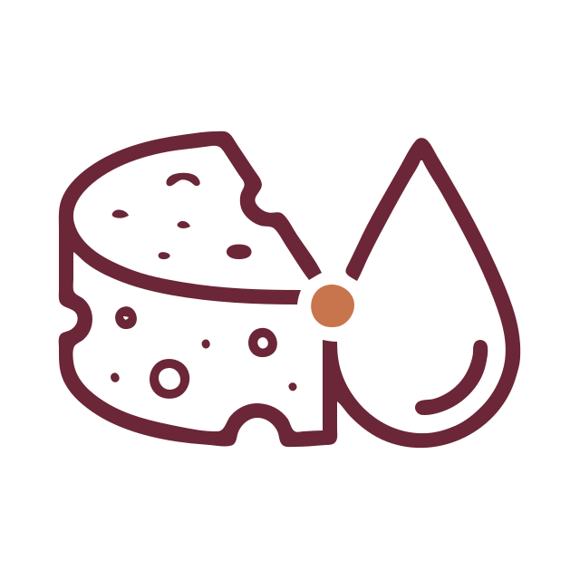
Розумний підбір
Пояснення, чому пара працює: кислотність, регіон, інтенсивність
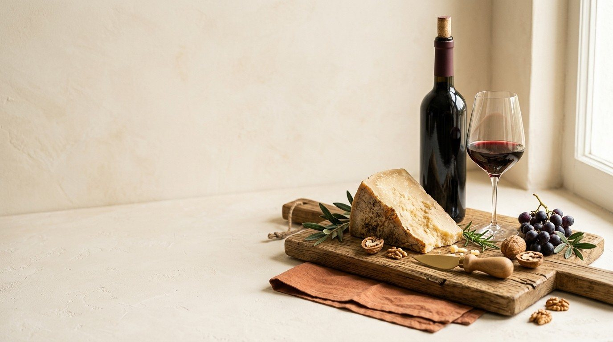
Каталог українських крафтових сирів і вин. Підбирайте поєднання за смаковим профілем без складного сомельє-жаргону.
Приклад збігу
Гауда + пінот нуар
86% збіг
М'які танини підкреслюють горіхові ноти витриманого сиру

Пояснення, чому пара працює: кислотність, регіон, інтенсивність
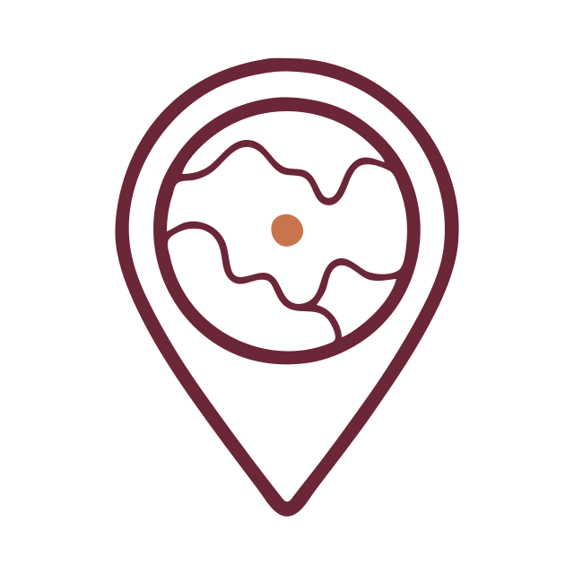
Каталог крафтових сирів і вин з ферм і виноробень
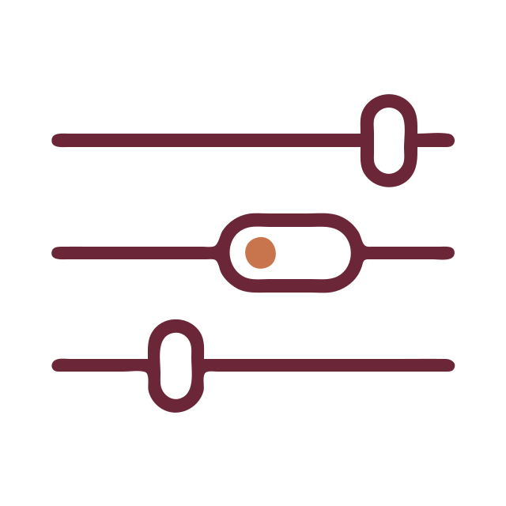
Смаковий профіль, витримка, інтенсивність і регіон продукту
Щотижня — три пари до сезонних продуктів у вашу пошту
Наш алгоритм порівнює кислотність, жирність та інтенсивність сиру й вина і показує кожен внесок у підсумковий відсоток збігу.
Сир або вино: сервіс підбере пару в обидва боки.
Відсоток показує, наскільки пара збігається за смаковим профілем.
Кожен збіг має причину: видно внесок кожного параметра.
94% збіг
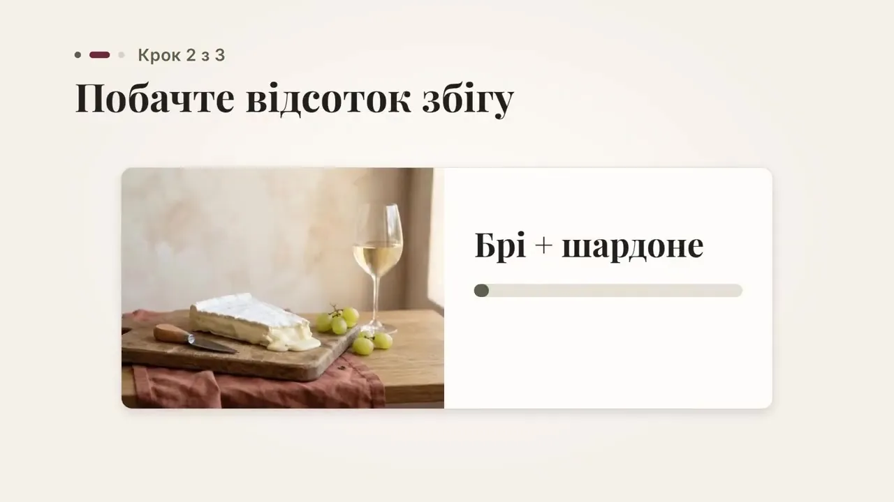
Оберіть, що у вас є, і отримайте рекомендації з поясненням
Приклад результату: топ-3 рекомендації
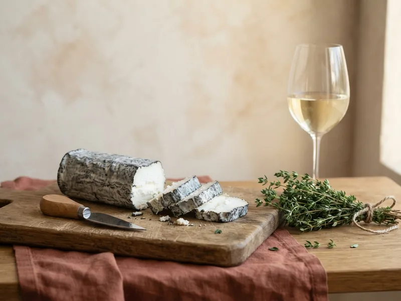
94% збіг
Кислотність вина балансує жирність сиру
Підписатися на добірки: Козячий сир + біле вино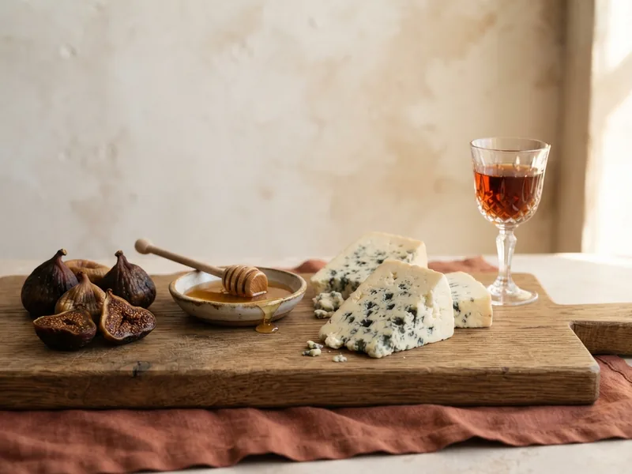
88% збіг
Солодкість вина пом'якшує солоність сиру
Підписатися на добірки: Дор Блю + десертне вино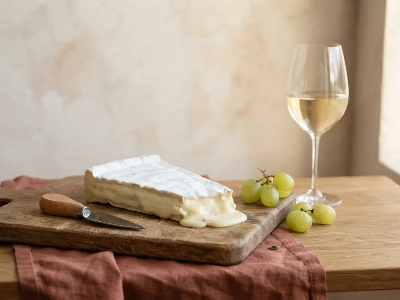
81% збіг
Бульбашки освіжають вершкову текстуру
Підписатися на добірки: Брі + ігристе виноВідсоток збігу — орієнтир за смаковим профілем.
92% збіг
Кремова текстура сиру підсилюється маслянистими нотами вина
Спробувати цю пару: Брі + шардоне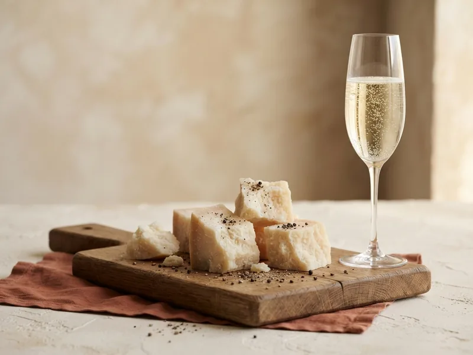
90% збіг
Мінеральна солоність і свіжі бульбашки врівноважують одна одну
Спробувати цю пару: Пекоріно + ігристе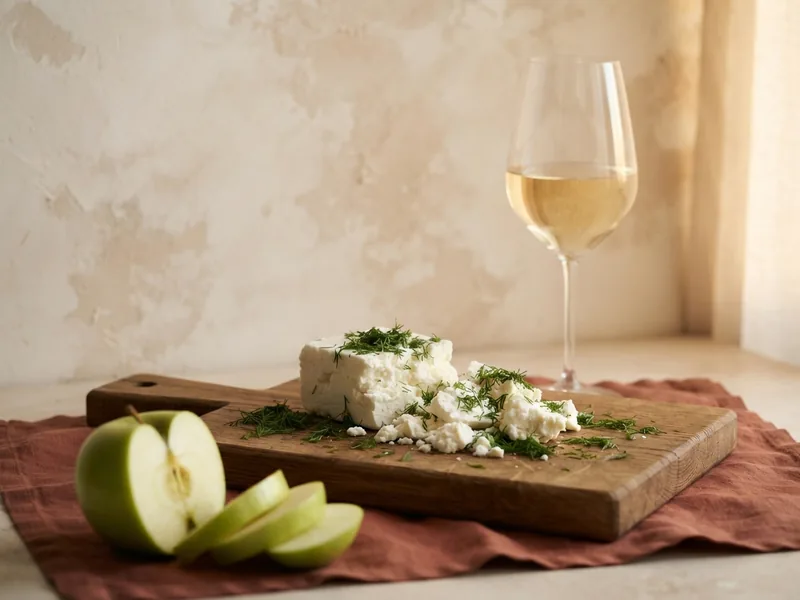
87% збіг
Легка кислинка вина підкреслює молочну солодкість
Спробувати цю пару: Бринза + рислінг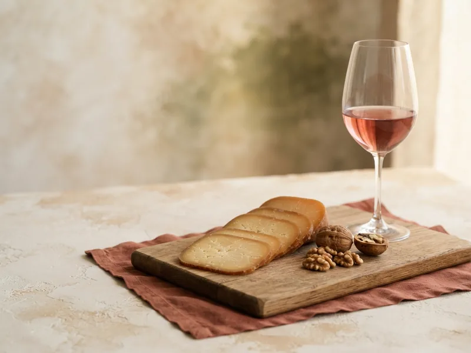
86% збіг
М'які танини підкреслюють горіхові ноти витриманого сиру
Спробувати цю пару: Гауда + пінот нуар85% збіг
Солодке вино врівноважує гостроту блакитної цвілі
Спробувати цю пару: Дор Блю + токай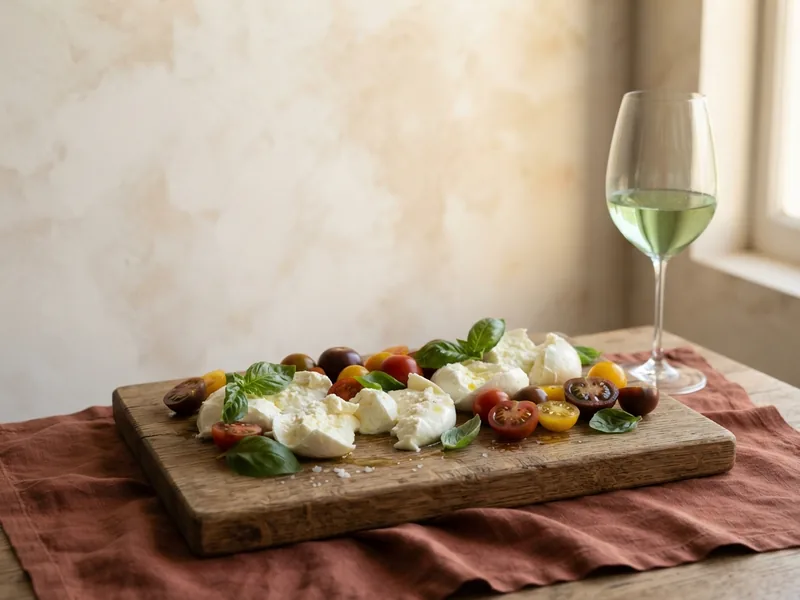
83% збіг
Свіжа кислотність підкреслює ніжний молочний смак
Спробувати цю пару: Моцарела + совіньйонГортайте вбік, щоб побачити всі пари →
Сироварні та виноробні, з якими ми працюємо.
Закарпаття
Козячі та овечі сири
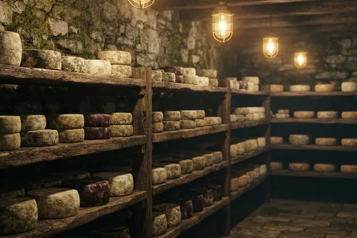
Львівщина
Витримані тверді сири
Чернівеччина
Білі та ігристі вина
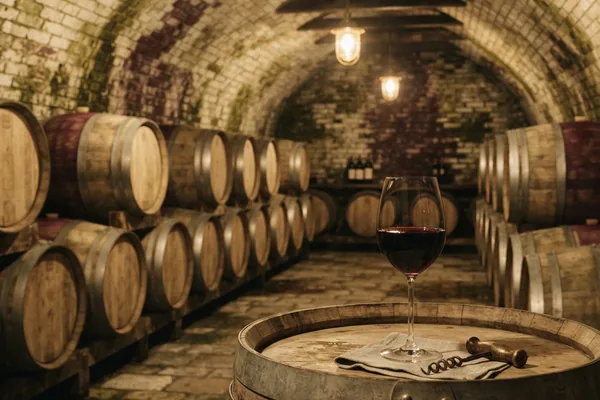
Одещина
Червоні та десертні вина
«Купила брі до шардоне за підказкою сервісу — гості питали, де я знайшла таку пару.»
«Нарешті пояснення без заумі: бачу, чому гауда пасує до пінот нуар, і наступного разу добираю сама.»
«Користуюся перед кожною дегустацією вдома. Бринза з рислінгом — відкриття.»
Дегустаційна кімната «Гурман-Інфо» у центрі Львова.
«Гурман-Інфо» — сервіс, який допомагає підібрати сир до вина і вино до сиру без сомельє-жаргону. Ми описуємо кожен продукт за смаковим профілем (кислотність, жирність, інтенсивність, витримка) і показуємо, чому пара працює.
Каталог ми будуємо навколо українських крафтових сироварень і виноробень та поступово розширюємо. Відсоток збігу — орієнтир для смаку, а не вирок.
Щоп'ятниці — добірка з трьох пар до сезонних продуктів, нові виробники й короткі пояснення, чому пара працює.
Без спаму: відписатися можна одним кліком.